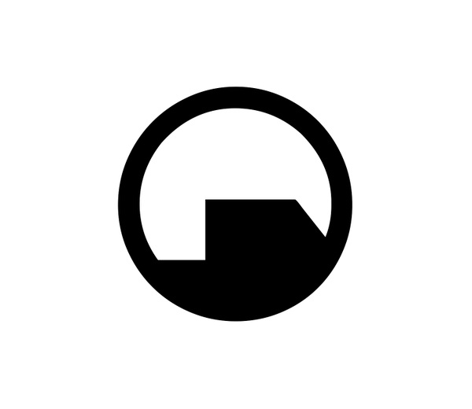

<ul>
	<li><a href="index.php">Página principal</a></li>
	<li><button id="profesores">Profesores activos</button></li>
	<li>
		<span class="opener">Submenú</span>
	</li>
	<li>
		<a id="inicioSesion" data-toggle="modal" data-target="#modalInicioSesion">Inicio de sesión</a>
		<!-- Modal -->
		<div id="modalInicioSesion" class="modal fade" role="dialog">
		  	<div class="modal-dialog">

			    <!-- Contenido del modal-->
			    <div class="modal-content">
			      	<table>
			      		<thead>
			      			<th>
			      				<h2 align="center">Iniciar sesión</h2>
			      			</th>
			      		</thead>
			      	</table>

			      	<!--Formato de inicio de sesion-->
			    	<div class="row">
				        <div class="col-sm-6 col-md-4 col-md-offset-4">
				            <div class="account-wall">
				                </img>

				                <!--Inicio de sesión-->
				                <form action="/session/InicioSesion.php" class="form-signin" method="post">
				                    <input type="text" name= "usrName" class="form-control" placeholder="Username" required autofocus>

				                    <input type="password" name= "passwd" class="form-control" placeholder="Password" required>

				                    <input class="btn btn-lg btn-primary btn-block" type="submit" value="Inicie sesión"> 
				                </form>

				                
				            </div>
				        </div>
					</div>

			      	<div class="modal-footer">
			        	<button type="button" class="btn btn-default" data-dismiss="modal">Cerrar</button>
			      	</div>
			    </div>
		  </div>
		</div>
	</li>
</ul>

<script src="assets/js/sidebarFunciones.js"></script>